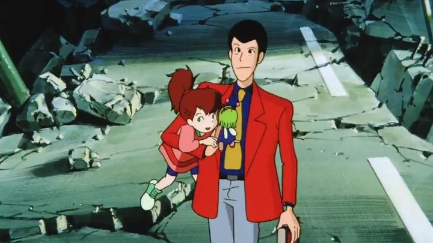

Yet another film for Lupin the Third is "Farewell to Nostradamus." This was originally one of the films Funimation licensed early in its life, and it went out of print fairly quickly... it's available now on Bluray thanks to Discotek's mission to make the entire franchise available in North America. And yes, the old English dub is included. The story this time begins at the end of Lupin's latest heist of a large diamond, which he hides in a doll to smuggle through the airport. After a series of incidents, the doll ends up in the hands of a spoiled little girl, who in turn is kidnapped by a gang of villains. There's a lot more to the set up this time: a growing cult of Nostradamus in Europe predicts the destruction of the world, and their legitimacy is in question... but it won't be if their predictions come true. The father of the kidnapped girl is planning to run for the American Presidency, and the kidnappers seem interested in halting his political career rather than money. This father also runs the Earth Building, a massive, modern Tower of Babel, large enough for thousands of people to live, work and play, nearly the size of a small country. And at the very top, rumours say the father holds the real Book of Nostradamus, written by the real man himself, under high security. It's just the thing that could prove the cult to be frauds, as a Fujiko explains, it's worth a lot of money to the highest bidder. Also, a global soccer competition is being held in the building that week. It's a massive web of threads that leads to the potential downfall of the Tower, a big score for Lupin, and hopefully the safety of the girl. It's a lot of stuff, and maybe too much. Like the best of Lupin, it's almost a mystery just to figure out where the plot is going and what the bad guys are really planning. But it works pretty well here, and because of the variety, it's usually not boring, even when the pacing slows down. There are a few plot holes that don't pay off: Lupin's Uncle plays an important role but is quickly discarded, and a hypnotizing method could have nabbed Fujiko and the girl a lot sooner had they used it earlier. This does result into a brief scene midway of a hypnotized Fujiko laying naked with Lupin to help him recover from a fever, one of the few animated cases of genuine intimacy between them... it's nice in the moment, but a little gross given the context, and the nudity is the one thing that stops this from being a family-friendly adventure. But these are nitpicks, and the story is generally good here.Most importantly, the story is fun, and it makes good use of the main cast. Jigen and Goemon have scenes where their strengths have value, compared to most stories where Goemon seems to have little to do. Despite the wide-ranging path Fujiko takes, she's important to the story as the girl's hired tutor and caretaker. Inspector Zenigata is goofy here, and is a fun target for comic-relief. There's a number of different vllains here, each in confict with each other. And the girl, while sometimes childish, brings a youthful innocence and charm to the story, and a chance for Lupin to be a hero, not unlike "The Castle of Cagliostro." All in all, it's one of the better Lupin adventures, and encompasses what a good Lupin adventure SHOULD be to me, including all the elements you'd expect from the franchise and not too many foreign ideas.  The production values are good. Not outstanding, but good, and looks good on Bluray. It's a cartoonish red-suit Lupin, but there's a good variety of colourful locales, and some surprisingly large setpieces, namely around the Tower. I thought this was a TV special, but no, it's actually one of the theatrical movies, which maybe explains why I thought it was a little better than the specials, but not by much. Funimation's old English dub is stronger here than some of their other Lupin movies ("Dead or Alive" comes to mind), feeling right on point to how the Lupin cast should sound, and reasonably good for the side characters too. There are a few liberties to the translation, but I liked the added jokes. As far as Lupin goes, I was surprised with how good, but authentic, "Farewell to Nostradamus" is as a Lupin adventure. Even with a few holes in the plot, this is an easy recommendation for viewers who want a LUPIN movie, and not simply a good movie with Lupin in it.
- "Ani" More reviews can be found at : https://2danicritic.github.io/ Previous review: review_Lupin_the_Third_-_Episode_0_-_First_Contact Next review: review_Lupin_the_Third_-_Fujiko's_Lie